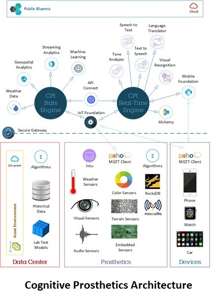

Cognitive Prosthetic Innovations
Problem IBM Trying To Solve
Prosthetics and robotic solutions work well in controlled lab environment but not in the real world (weather, terrain, geospatial location, visual recognition, etc).
IBM has the technology to add AI and adaptive learning for a prosthetic device to function outside the lab environment

Components Used are:
Watson Services / APIs:
Tone Analyzer, Speech to Text, Text to Speech, Conversation, Visual Recognition
On-prem:
MQ, DB2, Sensors, Prosthetics, Mobile, Car, Watch
CPI Stats Engine Component
- Provide multi-channel analysis to tune prosthetics based on known datasets
- Provide meaningful interface to the patient. Interacts with patient based on where he wants to go that day and provide predictive tuning
- Improve Lab Models and algorithms based on the feedback from the customer
CPI Real Time Engine Component
- Fine tune prosthetics with real time data collected from the sensors
- Real time communication with the RT Engine
- RT engine aynchronously communicates with the Stats Engine and exchanges data when connectivity is available
Case Study
- Sam a veteran with prosthetic leg need to drive a car to the grocery store
- Macro predictions based on weather and geolocation asynchronously communicated to the prosthetics
- Sam decides to meet his friend in the park full of grass not concrete
- Micro predictions fine tune prosthetics based on analysis of sensor data